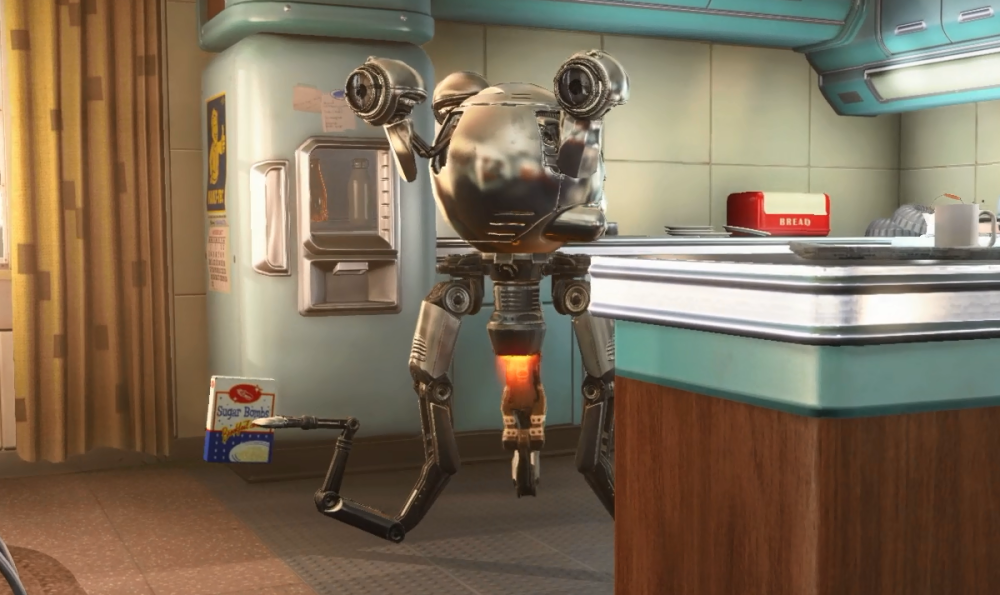

Science & Tech
RobCo Unveils Mr. Handy Mark III
By: Tim Stahl

RobCo Unveils Mr. Handy Mark III – "The Future of Domestic Automation Is Here"
WASHINGTON, D.C. – In a glitzy, invitation-only event held last night at the RobCo Corporate Pavilion in the Capital Mall, RobCo Industries unveiled the long-anticipated Mr. Handy Mark III, the latest evolution in what the company is calling “the definitive household assistant for the atomic age.” Surrounded by dazzling lights, orchestral fanfare, and a chorus line of synchronized Mark II units, the unveiling ceremony felt more like a Hollywood premiere than a tech demonstration. But the real star of the evening was the new model itself—hovering gracefully through clouds of dry ice, polished chrome gleaming beneath the showroom lights.
“America deserves better, and now—it’s here.”
Those were the words of Robert House, CEO of RobCo Industries, who addressed the crowd via holoprojector from his Las Vegas office. “In these uncertain times, RobCo remains committed to improving the lives of ordinary Americans. The Mr. Handy Mark III is not just a machine. It’s a promise. A promise of safety, efficiency, and comfort—even in the shadow of war.” According to product literature distributed at the event, the Mark III boasts enhanced AI routines, a 20% increase in fuel efficiency, and upgraded multi-tool appendages capable of everything from soufflés to spot-welding. The new onboard "CivAssist" personality core features over 12 new regional dialects, including Texan drawl, Midwestern modesty, and a special “Vault Hospitality” mode designed exclusively for Vault-Tec shelters. “He’s not just a robot. He’s a member of the family,” claimed RobCo spokesperson Andrea Kelman, while posing for photos beside the unit nicknamed “Wadsworth Prime.”
Security and Service
Perhaps most notable among the Mark III’s new features is its optional Security Protocol Suite—a military-grade upgrade package co-developed with General Atomics International. Though RobCo insists the feature is “strictly for civil defense,” the flamethrower demonstration conducted during the press event raised more than a few eyebrows—and singed a few eyebrows, too. “Imagine fending off looters after a blackout,” Kelman quipped, as the unit incinerated a series of plywood “communist infiltrators” to thunderous applause.
Industry Reactions
Not all are cheering. Consumer watchdog groups have voiced concerns about the increasing militarization of domestic bots, while representatives from the American Robotics Guild questioned the ethics of pairing household devices with battlefield technology. Despite the controversy, pre-orders for the Mark III reportedly broke records within hours of the announcement. Vault-Tec Corporation has already secured an exclusive contract to outfit over 200 vaults nationwide with the new units, citing “unmatched reliability in enclosed environments.”
A Glimpse into Tomorrow
As the crowd dispersed and holocams powered down, one message rang clear: the age of the American homemaker has a new hero—and it hums. The Mr. Handy Mark III is expected to roll off RobCo assembly lines later this fall, retailing at $2,499.99 (atomic batteries not included). Whether in the kitchen, the nursery, or standing guard at your fallout shelter door, one thing is certain:
RobCo is ready for tomorrow. Are you?